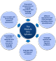

Delta Module One Course
 |
Syllabus area 2
|
 |
This section of the syllabus covers the second area of the Delta Module One syllabus. At the end of this section, you should be able to:
|
To be able to do this you need a knowledge of these areas. The guides on the right are those on this site which cover the areas. You should follow those and then return to this page (using the back button each time) to try some tests of your knowledge.
The very brief overview of what you need to know |
There is a short and quite simple guide to the fundamental nature
of a methodology for second-language teaching and learning (first
link below).
That will, it is hoped, make you aware that worked-out classroom
methodologies exhibit three characteristics:
- A methodology will be based on two theories:
- what language is. I.e., whether it is a system of meanings set in discoverable grammar rules or whether it is primarily a communicative tool in which rules and the memorisation of vocabulary play little part
- what learning is. I.e., whether it is a matter of acquiring good habits, of repeating what one hears or making an internal grammar of the language alongside a set of precepts about how the language is used
- A methodology will be recognisable because the design of materials and teaching procedures will reflect one or other of the first two theories
- The teaching techniques and procedures adopted in the classroom will be appropriate to the underlying theories from which the educator / trainer / coach / materials writer etc. is/are working.
This section of the course is designed to help you identify these
three aspects of a methodology and to be able to allow some critical
discussion of them.
If you come across a piece of material and a proposed way of using
it in the classroom (for example, listening to a tape recording of
models of vowel sounds and requiring the learners to repeat them),
then you should be well placed to speculate intelligently about the
teacher / course materials writer's underlying assumptions about
both learning and language.
There is a guide on this site entitled Methodology unpacked and refined which is linked below and gives you an overview of methodologies and their influences.
 |
A cumulative approach to the first two sections of the syllabus |
You should have followed the first guide (Theoretical perspectives on language acquisition and language teaching) before tackling this one (unless you have returned for a bit of revision). This area and the first are very closely linked and share the same tests and examination practice tasks. That also explains why some of the guides linked here are also linked from the first section of the syllabus.
| Syllabus areas | Guides to these areas |
| Historical and current approaches and methods including both mainstream (e.g. grammar-translation, Direct Method, audio-lingual method, situational language teaching, communicative and task-based learning approaches) and experimental or non-mainstream (e.g. delayed oral practice, Natural Approach, TPR, Silent Way) | The short general guide to methodology |
| Methodology unpacked and refined | |
| The history and development of ELT | |
| Communicative Language Teaching | |
| The Lexical Approach | |
| Genre approach | |
| Some 'alternative' Approaches | |
| Krashen and the Natural Approach | |
| Task-based learning | |
| Using translation | |
| Learning environments (e.g. the classroom, resource centres, VLEs, experiential learning outside the classroom – the work place, project work etc.) | Nine types of Resources |
| The pages for learners of English | |
| Contemporary issues and talking points as found in recent publications, conference presentations, online discussion groups etc. | The articles index |
| Noticing | |
| Post-method methodology |
Once you have worked your way through the guides and
done some research,
it's time to test your knowledge in these areas and then do
some revision exercises.
The links below take you to tests and examination practice tasks
common to both this section and the first (Theoretical perspectives on language acquisition and language
teaching).
There is a section of the
Delta Module One Revision Course for this area of the syllabus.
First step: do the tests.
Second step: apply your knowledge to the examination.
|  | |
| course index | exam practice |